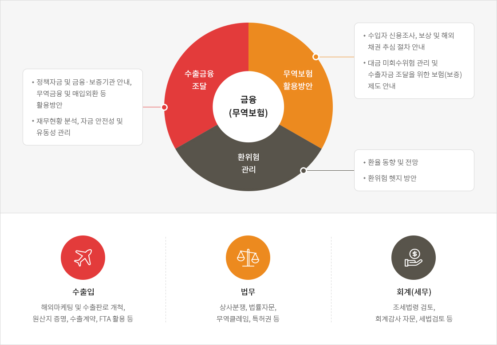
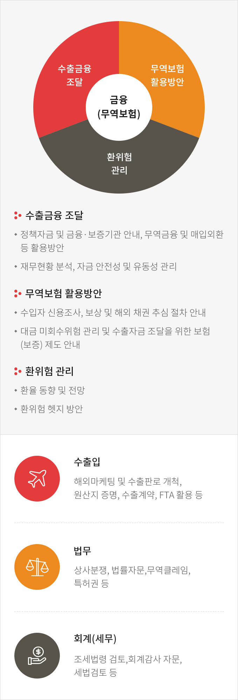

TRADE-SURE 컨설팅
TRADE-SURE 컨설팅이란?
중소 수출기업의 수출이행에 따른 대외위험을 사전에 제거·최소화 할 수 있도록 공사가 현장 경험이 풍부한 컨설턴트를 통해
수출기업별 1:1 맞춤형 무료 컨설팅서비스를 제공하는 사업입니다.
수출기업별 1:1 맞춤형 무료 컨설팅서비스를 제공하는 사업입니다.
이용요건
신청대상
전문분야 컨설팅을 원하는 연간 수출실적 U$1천만 미만의 수출(예정) 중소기업수수료
무료지원횟수
컨설팅 지원횟수는 기업 당 총 6회※ (동일 컨설턴트 배정은 최대 2회) 원칙
분야


이용절차
※ TRADE-SURE 컨설팅은 방문상담을 원칙으로 하며 필요시 전화, 화상, 인터넷을 통해 상담 가능합니다.- 신청서 접수 (TRADE-SURE 컨설팅 홈페이지)
- 컨설턴트 배정 (수출지역, 소재지 고려)
- 컨설팅 신청내용 사전분석 (신청내용 사전 분석)
- 상담일정 협의 (전화, 일정, 조율)
- 컨설팅 실시 (현장방문(필요시 전화, 화상, 인터넷 상담))
- 만족도 조사(해피콜) (컨설팅 내용 및 컨설턴트 만족도 조사)
- 컨설팅 재신청 (선택) (동일분야 혹은 신규분야에 대해 재신청)